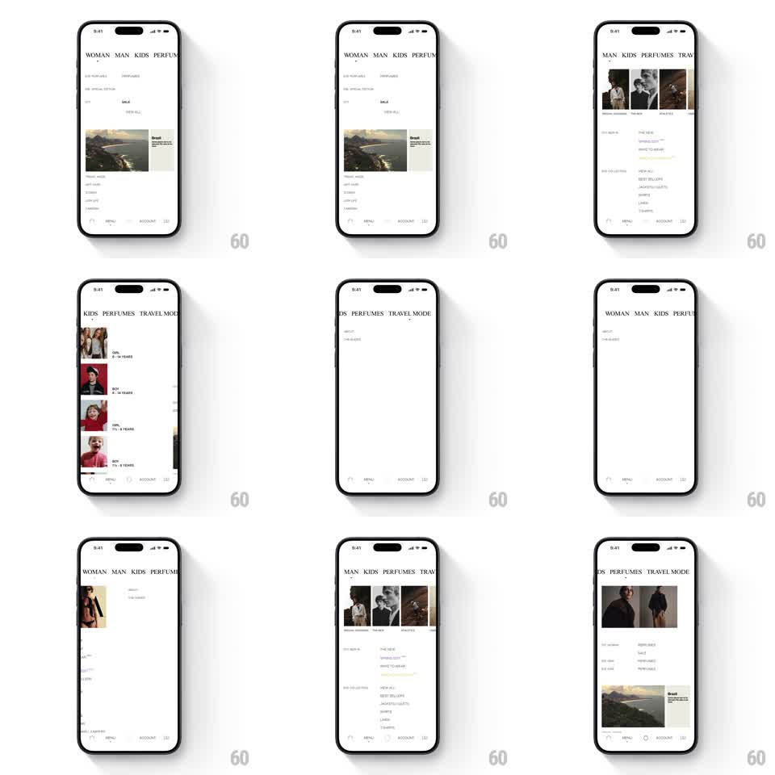

Media
Frame-by-frame

Rebuild this interaction 1:1: Zara's department menu - swiping horizontally moves the giant tab strip (WOMAN, MAN, KIDS, PERFUMES...) in lockstep with the content below, which crossfades to the new department.

Rebuild this interaction 1:1: Zara's department menu - swiping horizontally moves the giant tab strip (WOMAN, MAN, KIDS, PERFUMES...) in lockstep with the content below, which crossfades to the new department. ## Integration Integration: stack-agnostic spec - springs given as stiffness/damping, timed motions as duration + curve; map every value to your framework and animation library of choice. ## Scene Zara menu, white: an oversized serif tab strip across the top (WOMAN MAN KIDS PERFUMES TRAVEL MODE, active department centered), a feature image card with a "VIEW ALL" label, a two-column list of menu links, and a minimal bottom bar (search, MENU, ACCOUNT, bag). ## Motion spec Pattern: gesture-synced tab strip with crossfading department content. - The tab strip is draggable 1:1: letters translate with the finger at content speed; the strip is one continuous rail, so neighboring departments peek at the edges. - The department nearest center gets the active state (full opacity + a small dot marker); inactive tabs sit at ~40% opacity - states interpolate continuously with position, not snapped. - Content below does not slide - it crossfades: current links fade out (150ms) once drag passes 30%, new department's content fades up (250ms) when the new tab crosses center. - On release: the strip snaps so the nearest department centers (spring ~350/22); the content swap completes with the snap. - The feature image card (e.g. the landscape "VIEW ALL" card) slides in from the side with the snap (translateX 24 -> 0, 300ms) rather than fading, giving the page one spatial cue. ## Calibration - The type is huge and tight-tracked - the strip should feel like dragging a printed banner. - Only one thing slides (the strip) and one thing fades (the content); never both. ## Reduced motion Tab tap snaps instantly; content crossfades (250ms). ## Don't miss - The active dot marker slides under the strip with it and settles under the centered tab. - The bottom bar never participates - it stays fixed and still.